20.65 ZEILBERG: Indefinite and Definite Summation
This package is a careful implementation of the Gosper and Zeilberger algorithms for
indefinite and definite summation of hypergeometric terms, respectively. Extensions of
these algorithms are also included that are valid for ratios of products of powers,
factorials, Γ function terms, binomial coefficients, and shifted factorials that are
rational-linear in their arguments.
Authors: Gregor Stölting and Wolfram Koepf.
20.65.1 Introduction
This package is a careful implementation of the
Gosper
and Zeilberger algorithms for indefinite, and definite summation of hypergeometric
terms, respectively. Further, extensions of these algorithms given by the first author are
covered. An expression ak is called a hypergeometric term (or closed form), if
ak∕ak−1 is a rational function with respect to k. Typical hypergeometric terms are
ratios of products of powers, factorials, Γ function terms, binomial coefficients,
and shifted factorials (Pochhammer symbols) that are integer-linear in their
arguments.
The extensions of Gosper’s and Zeilberger’s algorithm mentioned in particular are valid
for ratios of products of powers, factorials, Γ function terms, binomial coefficients, and
shifted factorials that are rational-linear in their arguments.
20.65.2 Gosper Algorithm
The Gosper algorithm [Gos78] is a decision procedure, that decides by algebraic
calculations whether or not a given hypergeometric term ak has a hypergeometric term
antidifference gk, i.e. gk − gk−1 = ak with rational gk∕gk−1, and returns gk if the
procedure is successful, in which case we call ak Gosper-summable. Otherwise no
hypergeometric term antidifference exists. Therefore if the Gosper algorithm does not
return a closed form solution, it has proved that no such solution exists, an
information that may be quite useful and important. The Gosper algorithm is the
discrete analogue of the Risch algorithm for integration in terms of elementary
functions.
Any antidifference is uniquely determined up to a constant, and is denoted by
Finding gk given ak is called indefinite summation. The antidifference operator Σ is the
inverse of the downward difference operator ∇ak = ak − ak−1. There is an
analogous summation theory corresponding to the upward difference operator
Δak = ak+1 − ak.
In case, an antidifference gk of ak is known, any sum
can be easily calculated by an evaluation of g at the boundary points like in the
integration case. Note, however, that the sum
e. g. is not of this type since the summand
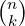
depends on the upper boundary point n
explicitly. This is an example of a definite sum that we consider in the next
section.
Our package supports the input of powers (a^k), factorials (factorial(k)), Γ
function terms (gamma(a)), binomial coefficients (Binomial(n,k)), shifted
factorials (Pochhammer(a,k)= a(a + 1) (a + k − 1) = Γ(a + k)∕Γ(a)),
and partially products (prod(f,k,k1,k2)). It takes care of the necessary
simplifications, and therefore provides you with the solution of the decision problem as
long as the memory or time requirements are not too high for the computer
used.
(a + k − 1) = Γ(a + k)∕Γ(a)),
and partially products (prod(f,k,k1,k2)). It takes care of the necessary
simplifications, and therefore provides you with the solution of the decision problem as
long as the memory or time requirements are not too high for the computer
used.
20.65.3 Zeilberger Algorithm
The (fast) Zeilberger algorithm [Zei90]–[Zei91] deals with the definite summation of
hypergeometric terms. Zeilberger’s paradigm is to find (and return) a linear
homogeneous recurrence equation with polynomial coefficients (called holonomic
equation) for an infinite sum
the summation to be understood over all integers k, if f(n,k) is a hypergeometric term
with respect to both k and n. The existence of a holonomic recurrence equation for s(n)
is then generally guaranteed.
If one is lucky, and the resulting recurrence equation is of first order
|
p(n)s(n − 1) + q(n)s(n) = 0 (p,qpolynomials),
|
s(n) turns out to be a hypergeometric term, and a closed form solution can be easily
established using a suitable initial value, and is represented by a ratio of Pochhammer or
Γ function terms if the polynomials p, and q can be factored.
Zeilberger’s algorithm does not guarantee to find the holonomic equation of lowest order,
but often it does.
If the resulting recurrence equation has order larger than one, this information can be
used for identification purposes: Any other expression satisfying the same recurrence
equation, and the same initial values, represents the same function.
Note that a definite sum ∑
k=m1m2f(n,k) is an infinite sum if f(n,k) = 0 for
k < m1 and k > m2. This is often the case, an example of which is the sum
(20.93) considered above, for which the hypergeometric recurrence equation
2s(n− 1) −s(n) = 0 is generated by Zeilberger’s algorithm, leading to the closed form
solution s(n) = 2n.
Definite summation is trivial if the corresponding indefinite sum is Gosper-summable
analogously to the fact that definite integration is trivial as soon as an elementary
antiderivative is known. If this is not the case, the situation is much more difficult, and it
is therefore quite remarkable and non-obvious that Zeilberger’s method is just a clever
application of Gosper’s algorithm.
Our implementation is mainly based on [Koo93] and [Koe94b]. More examples can be
found in [PS95], [Str93], [Wil90], and [Wil93] many of which are contained in the test
file zeilberg.tst.
20.65.4 REDUCE operator GOSPER
The gosper operator is an implementation of the Gosper algorithm.
Example:
2: gosper((-1)^(k+1)*(4*k+1)*factorial(2*k)/
(factorial(k)*4^k*(2*k-1)*factorial(k+1)),k);
k
- ( - 1) *factorial(2*k)
------------------------------------
2*k
2 *factorial(k + 1)*factorial(k)
This solves a problem given in SIAM Review ([OK94], Problem 94–2) where it was
asked to determine the infinite sum
|
S = limn→∞Sn, Sn = ∑
k=1n 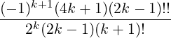 ,
|
((2k − 1)!! = 1 ⋅ 3 (2k − 1) =
(2k − 1) =
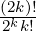
). The above calculation shows that the summand
is Gosper-summable, and the limit S = 1 is easily established using Stirling’s
formula.
The implementation solves further deep and difficult problems some examples of which
are:
3: gosper(sub(n=n+1,binomial(n,k)^2/binomial(2*n,n))-
binomial(n,k)^2/binomial(2*n,n),k);
2
((binomial(n + 1,k) *binomial(2*n,n)
2
- binomial(2*(n + 1),n + 1)*binomial(n,k) )
2
*(2*k - 3*n - 1)*(k - n - 1) )/((
2*(2*(n + 1) - k)*(2*n + 1)*k
2
- (3*n + 1)*(n + 1) )
*binomial(2*(n + 1),n + 1)*binomial(2*n,n))
4: gosper(binomial(k,n),k);
(k + 1)*binomial(k,n)
-----------------------
n + 1
5: gosper((-25+15*k+18*k^2-2*k^3-k^4)/
(-23+479*k+613*k^2+137*k^3+53*k^4+5*k^5+k^6),k);
2
- (2*k - 15*k + 8)*k
----------------------------
3 2
23*(k + 4*k + 27*k + 23)
The Gosper algorithm is not capable to give antidifferences depending on the harmonic
numbers
|
Hk := ∑
j=1k 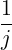 ,
|
e. g. ∑
kHk = (k + 1)(Hk+1 − 1), but, is able to give a proof, instead, for the fact that
Hk does not possess a closed form evaluation:
6: gosper(1/k,k);
***** Gosper algorithm: no closed form solution exists
The following code gives the solution to a summation problem proposed in Gosper’s
original paper [Gos78]. Let
|
fk = ∏
j=1k(a + bj + cj2) and g
k = ∏
j=1k(e + bj + cj2).
|
Then a closed form solution for
is found by the definitions
7: operator ff,gg$
8: let {ff(~k+~m) => ff(k+m-1)*(c*(k+m)^2+b*(k+m)+a)
when (fixp(m) and m>0),
ff(~k+~m) => ff(k+m+1)/(c*(k+m+1)^2+b*(k+m+1)+a)
when (fixp(m) and m<0)}$
9: let {gg(~k+~m) => gg(k+m-1)*(c*(k+m)^2+b*(k+m)+e)
when (fixp(m) and m>0),
gg(~k+~m) => gg(k+m+1)/(c*(k+m+1)^2+b*(k+m+1)+e)
when (fixp(m) and m<0)}$
and the calculation
10: gosper(ff(k-1)/gg(k),k);
ff(k)
---------------
(a - e)*gg(k)
11: clear ff,gg$
Similarly closed form solutions of ∑
k
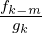
for positive integers m can be obtained, as
well as of ∑
k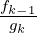
for
|
fk = ∏
j=1k(a+bj +cj2 +dj3) and g
k = ∏
j=1k(e+bj +cj2 +dj3)
|
and for analogous expressions of higher degree polynomials.
20.65.5 REDUCE operator EXTENDED_GOSPER
The extended_gosper operator is an implementation of an extended version of
Gosper’s algorithm given by Koepf [Koe94b].
Examples:
12: extended_gosper(binomial(k/2,n),k);
k k - 1
(k + 2)*binomial(---,n) + (k + 1)*binomial(-------,n)
2 2
-------------------------------------------------------
2*(n + 1)
13: extended_gosper(k*factorial(k/7),k,7);
k
(k + 7)*factorial(---)
7
20.65.6 REDUCE operator SUMRECURSION
The sumrecursion operator is an implementation of the (fast) Zeilberger algorithm.
A simple example deals with Equation
(20.93)
14: sumrecursion(binomial(n,k),k,n);
2*summ(n - 1) - summ(n)
The whole hypergeometric database of the Vandermonde, Gauß, Kummer, Saalschütz,
Dixon, Clausen and Dougall identities (see [Wil93]), and many more identities (see
e. g. [Koe94b]), can be obtained using sumrecursion. As examples, we consider the
difficult cases of Clausen and Dougall:
15: summand:=factorial(a+k-1)*factorial(b+k-1)/
(factorial(k)*factorial(-1/2+a+b+k))
*factorial(a+n-k-1)*factorial(b+n-k-1)/
(factorial(n-k)*factorial(-1/2+a+b+n-k))$
16: sumrecursion(summand,k,n);
(2*a + 2*b + 2*n - 1)*(2*a + 2*b + n - 1)*summ(n)*n
- 2*(2*a + n - 1)*(a + b + n - 1)*(2*b + n - 1)*summ(n - 1)
17: summand:=pochhammer(d,k)*pochhammer(1+d/2,k)*
pochhammer(d+b-a,k)*pochhammer(d+c-a,k)*
pochhammer(1+a-b-c,k)*pochhammer(n+a,k)*
pochhammer(-n,k)/(factorial(k)*pochhammer(d/2,k)*
pochhammer(1+a-b,k)*pochhammer(1+a-c,k)*
pochhammer(b+c+d-a,k)*pochhammer(1+d-a-n,k)*
pochhammer(1+d+n,k))$
18: sumrecursion(summand,k,n);
- (n - 1 + d + c + b - a)*(n - 1 - d + a)
*(b - n - a)*(c - n - a)*summ(n) -
(d - n + c + b - 2*a)*(n - 1 + b)*(n - 1 + c)
*(d + n)*summ(n - 1)
corresponding to the statements
|
4F3 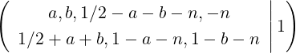 = 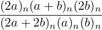
|
and
(compare next section), respectively.
Other applications of the Zeilberger algorithm are connected with the verification of
identities. To prove the identity
|
∑
k=0n 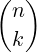 3 = ∑
k=0n 2 2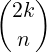 ,
|
e. g., we may prove that both sums satisfy the same recurrence equation
19: sumrecursion(binomial(n,k)^3,k,n);
2 2
8*(n - 1) *summ(n - 2) - summ(n)*n
2
+ (7*n - 7*n + 2)*summ(n - 1)
20: sumrecursion(binomial(n,k)^2*binomial(2*k,n),k,n);
2 2
8*(n - 1) *summ(n - 2) - summ(n)*n
2
+ (7*n - 7*n + 2)*summ(n - 1)
and finally check the initial conditions:
21: sub(n=0,k=0,binomial(n,k)^3);
1
22: sub(n=0,k=0,binomial(n,k)^2*binomial(2*k,n));
1
23: sub(n=1,k=0,binomial(n,k)^3)
+sub(n=1,k=1,binomial(n,k)^3);
2
24: sub(n=1,k=0,binomial(n,k)^2*binomial(2*k,n))+
sub(n=1,k=1,binomial(n,k)^2*binomial(2*k,n));
2
20.65.7 REDUCE operator EXTENDED_SUMRECURSION
The extended_sumrecursion operator is an implementation of an extension of the
(fast) Zeilberger algorithm given by Koepf [Koe94b].
Examples:
25: extended_sumrecursion(binomial(n,k)*binomial(k/2,n),
k,n,1,2);
summ(n - 1) + 2*summ(n)
which can be obtained automatically by
26: sumrecursion(binomial(n,k)*binomial(k/2,n),k,n);
summ(n - 1) + 2*summ(n)
Similarly, we get
27: extended_sumrecursion(binomial(n/2,k),k,n,2,1);
2*summ(n - 2) - summ(n)
28: sumrecursion(binomial(n/2,k),k,n);
2*summ(n - 2) - summ(n)
29: sumrecursion(hyperterm({a,b,a+1/2-b,1+2*a/3,-n},
{2*a+1-2*b,2*b,2/3*a,1+a+n/2},4,k)/(factorial(n)*2^(-n)/
factorial(n/2))/
hyperterm({a+1,1},{a-b+1,b+1/2},1,n/2),k,n);
summ(n - 2) - summ(n)
In the last example, the progam chooses m = 2, and l = 1 to derive the resulting
recurrence equation (see [Koe94b], Table 3, (1.3)).
20.65.8 REDUCE operator HYPERRECURSION
Sums to which the Zeilberger algorithm applies, in general are special cases of the
generalized hypergeometric function
|
pFq 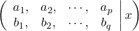 := ∑
k=0∞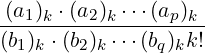 xk
|
with upper parameters {a1,a2,…,ap}, and lower parameters {b1,b2,…,bq}. If a recursion
for a generalized hypergeometric function is to be established, you can use the following
REDUCE operator:
- hyperrecursion(upper,lower,x,n) determines a holonomic
recurrence equation with respect to n for pFq
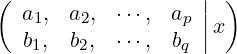
,
where upper= {a1,a2,…,ap} is the list of upper parameters, and lower=
{b1,b2,…,bq} is the list of lower parameters depending on n. If Zeilberger’s
algorithm does not apply, extended_sumrecursion of § 20.65.7 is
used.
- hyperrecursion(upper,lower,x,n,j) (j ∈ ℕ) searches only for
a holonomic recurrence equation of order j. This operator does not use
extended_sumrecursion automatically.
Therefore
30: hyperrecursion({-n,b},{c},1,n);
(b - c - n + 1)*summ(n - 1) + (c + n - 1)*summ(n)
establishes the Vandermonde identity
|
2F1 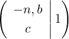 = 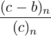 ,
|
whereas
31: hyperrecursion({d,1+d/2,d+b-a,d+c-a,1+a-b-c,n+a,-n},
{d/2,1+a-b,1+a-c,b+c+d-a,1+d-a-n,1+d+n},1,n);
- (n - 1 + d + c + b - a)*(n - 1 - d + a)
*(b - n - a)*(c - n - a)*summ(n) -
(d - n + c + b - 2*a)*(n - 1 + b)*(n - 1 + c)
*(d + n)*summ(n - 1)
proves Dougall’s identity, again.
If a hypergeometric expression is given in hypergeometric notation, then the use of
hyperrecursion is more natural than the use of sumrecursion.
Moreover you may use the REDUCE operator
- hyperterm(upper,lower,x,k) that yields the hypergeometric
term
with upper parameters upper= {a1,a2,…,ap}, and lower parameters
lower= {b1,b2,…,bq}
in connection with hypergeometric terms.
The operator sumrecursion can also be used to obtain three-term recurrence
equations for systems of orthogonal polynomials with the aid of known hypergeometric
representations. By ([NUS91], (2.7.11a)), the discrete Krawtchouk polynomials
kn(p)(x,N) have the hypergeometric representation
|
kn(p)(x,N) = (−1)npn 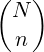 2F1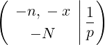 ,
|
and therefore we declare
32: krawtchoukterm:=
(-1)^n*p^n*binomial(NN,n)*hyperterm({-n,-x},{-NN},1/p,k)$
and get the three three-term recurrence equations
33: sumrecursion(krawtchoukterm,k,n);
((2*p - 1)*n - nn*p - 2*p + x + 1)*summ(n - 1)
- (n - nn - 2)*(p - 1)*summ(n - 2)*p - summ(n)*n
34: sumrecursion(krawtchoukterm,k,x);
(2*(x - 1)*p + n - nn*p - x + 1)*summ(x - 1)
- ((x - 1) - nn)*summ(x)*p - (p - 1)*(x - 1)*summ(x - 2)
35: sumrecursion(krawtchoukterm,k,NN);
(x + 1 + n + (p - 2)*nn)*summ(nn - 1) - (
(x + 1 - nn)*summ(nn - 2)
- (n - nn)*(p - 1)*summ(nn))
with respect to the parameters n, x, and N respectively.
20.65.9 REDUCE operator HYPERSUM
With the operator hypersum, hypergeometric sums are directly evaluated in closed
form whenever the extended Zeilberger algorithm leads to a recurrence equation
containing only two terms:
- hypersum(upper,lower,x,n) determines a closed
form representation for pFq
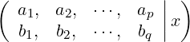
, where upper=
{a1,a2,…,ap} is the list of upper parameters, and lower= {b1,b2,…,bq}
is the list of lower parameters depending on n. The result is given as a
hypergeometric term with respect to n.
If the result is a list of length m, we call it m-fold symmetric, which is to be
interpreted as follows: Its jth part is the solution valid for all n of the form
n = mk + j − 1(k ∈ ℕ0). In particular, if the resulting list contains two
terms, then the first part is the solution for even n, and the second part is the
solution for odd n.
Examples [Koe94b]:
36: hypersum({a,1+a/2,c,d,-n},{a/2,1+a-c,1+a-d,1+a+n},1,n);
pochhammer(a - c - d + 1,n)*pochhammer(a + 1,n)
-------------------------------------------------
pochhammer(a - c + 1,n)*pochhammer(a - d + 1,n)
37: hypersum({a,1+a/2,d,-n},{a/2,1+a-d,1+a+n},-1,n);
pochhammer(a + 1,n)
-------------------------
pochhammer(a - d + 1,n)
Note that the operator togamma converts expressions given in factorial-Γ-binomial-Pochhammer
notation into a pure Γ function representation:
38: togamma(ws);
gamma(a - d + 1)*gamma(a + n + 1)
-----------------------------------
gamma(a - d + n + 1)*gamma(a + 1)
Here are some m-fold symmetric results:
39: hypersum({-n,-n,-n},{1,1},1,n);
n/2 2 n 1 n
( - 27) *pochhammer(---,---)*pochhammer(---,---)
3 2 3 2
{----------------------------------------------------,
n 2
factorial(---)
2
0}
40: hypersum({-n,n+3*a,a},{3*a/2,(3*a+1)/2},3/4,n);
2 n 1 n
pochhammer(---,---)*pochhammer(---,---)
3 3 3 3
{-----------------------------------------------------,
3*a + 2 n 3*a + 1 n
pochhammer(---------,---)*pochhammer(---------,---)
3 3 3 3
0,
0}
These results correspond to the formulas (compare [Koe94b])
|
3F2 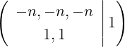 = 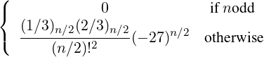
|
and
20.65.10 REDUCE operator SUMTOHYPER
With the operator sumtohyper, sums given in factorial-Γ-binomial-Pochhammer
notation are converted into hypergeometric notation.
sumtohyper(f,k) determines the hypergeometric representation of ∑
k=−∞∞fk,
i.e. its output is c*hypergeometric(upper,lower,x), corresponding to the
representation
|
∑
k=−∞∞f
k = c ⋅pFq 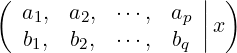 ,
|
where upper= {a1,a2,…,ap} and lower= {b1,b2,…,bq} are the lists of upper and
lower parameters.
Examples:
41: sumtohyper(binomial(n,k)^3,k);
hypergeometric({ - n, - n, - n},{1,1},-1)
42: sumtohyper(binomial(n,k)/2^n
-sub(n=n-1,binomial(n,k)/2^n),k);
- n + 2 - n
- hypergeom({----------, - n},{------},-1)
2 2
---------------------------------------------
n
2
20.65.11 Simplification Operators
For the decision that an expression ak is a hypergeometric term, it is necessary to find out
whether or not ak∕ak−1 is a rational function with respect to k. For the purpose to decide
whether or not an expression involving powers, factorials, Γ function terms, binomial
coefficients, and Pochhammer symbols is a hypergeometric term, the following
simplification operators can be used:
- simplify_gamma(f) simplifies an expression f involving only rational,
powers and Γ function terms according to a recursive application of the
simplification rule Γ(a + 1) = aΓ(a) to the expression tree. Since all
Γ arguments with integer difference are transformed, this gives a decision
procedure for rationality for integer-linear Γ term product ratios.
- simplify_combinatorial(f) simplifies an expression f involving
powers, factorials, Γ function terms, binomial coefficients, and Pochhammer
symbols by converting factorials, binomial coefficients, and Pochhammer
symbols into Γ function terms, and applying simplify_gamma to its
result. If the output is not rational, it is given in terms of Γ functions. If you
prefer factorials you may use
- gammatofactorial (rule) converting Γ function terms into factorials
using Γ(x) → (x − 1)!.
- simplify_gamma2(f) uses the duplication formula of the Γ function to
simplify f.
- simplify_gamman(f,n) uses the multiplication formula of the Γ
function to simplify f.
The use of simplify_combinatorial(f) is a safe way to decide the rationality
for any ratio of products of powers, factorials, Γ function terms, binomial coefficients,
and Pochhammer symbols.
Example:
43: simplify_combinatorial(sub(k=k+1,krawtchoukterm)/
krawtchoukterm);
(k - n)*(k - x)
--------------------
(k - nn)*(k + 1)*p
From this calculation, we see again that the upper parameters of the hypergeometric
representation of the Krawtchouk polynomials are given by {−n,−x}, its lower
parameter is {−N}, and the argument of the hypergeometric function is 1∕p.
Other examples are
44: simplify_combinatorial(binomial(n,k)/binomial(2*n,k-1));
gamma( - (k - 2*n - 2))*gamma(n + 1)
----------------------------------------
gamma( - (k - n - 1))*gamma(2*n + 1)*k
45: ws where gammatofactorial;
factorial( - k + 2*n + 1)*factorial(n)
----------------------------------------
factorial( - k + n)*factorial(2*n)*k
46: simplify_gamma2(gamma(2*n)/gamma(n));
2*n 2*n + 1
2 *gamma(---------)
2
-----------------------
2*sqrt(pi)
47: simplify_gamman(gamma(3*n)/gamma(n),3);
3*n 3*n + 2 3*n + 1
3 *gamma(---------)*gamma(---------)
3 3
----------------------------------------
2*sqrt(3)*pi
20.65.12 Tracing
If you set
48: on zb_trace;
tracing is enabled, and you get intermediate results, see [Koe94b].
Example for the Gosper algorithm:
49: gosper(pochhammer(k-n,n),k);
k - 1
a(k)/a(k-1):= -----------
k - n - 1
Gosper algorithm applicable
p:= 1
q:= k - 1
r:= k - n - 1
degreebound := 0
1
f:= -------
n + 1
Gosper algorithm successful
pochhammer(k - n,n)*k
-----------------------
n + 1
Example for the Zeilberger algorithm:
50: sumrecursion(binomial(n,k)^2,k,n);
2
n
F(n,k)/F(n-1,k):= ----------
2
(k - n)
2
(k - n - 1)
F(n,k)/F(n,k-1):= --------------
2
k
Zeilberger algorithm applicable
applying Zeilberger algorithm for order:= 1
2 2 2
p:= zb_sigma(1)*k - 2*zb_sigma(1)*k*n + zb_sigma(1)*n + n
2 2
q:= k - 2*k*n - 2*k + n + 2*n + 1
2
r:= k
degreebound := 1
2*k - 3*n + 2
f:= ---------------
n
2 2 2 3 2
- 4*k *n + 2*k + 8*k*n - 4*k*n - 3*n + 2*n
p:= -------------------------------------------------
n
Zeilberger algorithm successful
4*summ(n - 1)*n - 2*summ(n - 1) - summ(n)*n
51: off zb_trace;
20.65.13 Global Variables and Switches
The following global variables and switches can be used in connection with the
ZEILBERG package:
- zb_trace, switch; default setting off. Turns tracing on and off.
- zb_direction, variable; settings: down, up; default setting down.
In the case of the Gosper algorithm, either a downward or a forward antidifference
is calculated, i.e., gosper finds gk with either
|
ak = gk − gk−1 or ak = gk+1 − gk,
|
respectively.
In the case of the Zeilberger algorithm, either a downward or an upward
recurrence equation is returned. Example:
52: zb_direction:=up$
53: sumrecursion(binomial(n,k)^2,k,n);
summ(n + 1)*n + summ(n + 1) - 4*summ(n)*n - 2*summ(n)
54: zb_direction:=down$
- zb_order, variable; settings: any nonnegative integer; default setting 5.
Gives the maximal order for the recurrence equation that sumrecursion
searches for.
- zb_factor, switch; default setting on. If off, the factorization of the
output usually producing nicer results is suppressed.
- zb_proof, switch; default setting off. If on, then several intermediate
results are stored in global variables:
- gosper_representation, variable; default setting nil.
If a gosper command is issued, and if the Gosper algorithm is applicable, then
the variable gosper_representation is set to the list of polynomials (with
respect to k) {p,q,r,f} corresponding to the representation
|
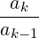 = 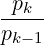 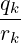 , gk = 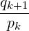 fkak,
|
see [Gos78]. Examples:
55: on zb_proof;
56: gosper(k*factorial(k),k);
(k + 1)*factorial(k)
57: gosper_representation;
{k,k,1,1}
58: gosper(
1/(k+1)*binomial(2*k,k)/(n-k+1)
*binomial(2*n-2*k,n-k),k);
((2*k - n + 1)*(2*k + 1)
*binomial( - 2*(k - n), - (k - n))
*binomial(2*k,k))/((k + 1)*(n + 2)*(n + 1))
59: gosper_representation;
{1,
(2*k - 1)*(k - n - 2),
(2*k - 2*n - 1)*(k + 1),
- (2*k - n + 1)
------------------}
(n + 2)*(n + 1)
- zeilberger_representation, variable; default setting nil.
If a sumrecursion command is issued, and if the Zeilberger algorithm is
successful, then the variable zeilberger_representation is set to
the final Gosper representation used, see [Koo93].
- zb_f, internal operator, do not use.
- zb_sigma, internal operator, do not use.
20.65.14 Messages
The following messages may occur:
- *****
Gosper algorithm: no closed form solution exists
Example input:
gosper(factorial(k),k).
- ***** Gosper algorithm not applicable
Example input:
gosper(factorial(k/2),k).
The term ratio ak∕ak−1 is not rational.
- ***** illegal number of arguments
Example input:
gosper(k).
- ***** Zeilberger algorithm fails. Enlarge zb_order
Example input:
sumrecursion(binomial(n,k)*binomial(6*k,n),k,n)
For this example a setting zb_order:=6 is needed.
- ***** Zeilberger algorithm not applicable
Example input:
sumrecursion(binomial(n/2,k),k,n)
One of the term ratios f(n,k)∕f(n − 1,k) or f(n,k)∕f(n,k − 1) is not
rational.
- ***** SOLVE given inconsistent equations
You can ignore this message that occurs with Version 3.5.